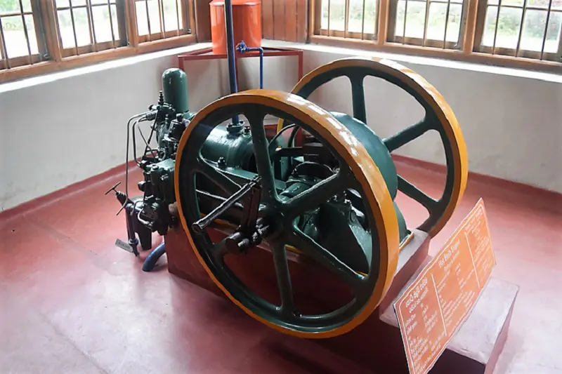
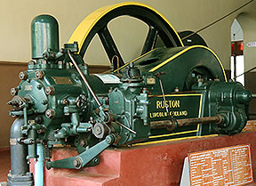
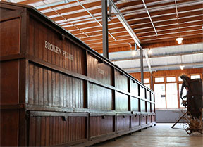

The Museum
The Ceylon Tea Museum at Hantane, three kilometres from Kandy city is served by a motorable road that circles the museum, provides easy access and adequate parking facilities for cars and tourist coaches. The museum consists of four floors. The ground floor and the second floor exhibit very old items of machinery and the first floor consist of a library and an auditorium with facilities for audio visual presentations. The third floor is allocated to tea sales outlets, where a selection of Sri Lanka's fine tea is available. The entire top floor is a tea cafe. A panoramic view of the Kandy town surrounded by the beautiful Hunasgiriya, Knuckles Range and the Matale range of hills can be viewed through a telescope mounted on the fourth floor. The grounds surrounding the Tea Museum are landscaped with different varieties of teas. Kandy is a mandatory stop virtually on every tourist's itinerary and the location of the Ceylon Tea Museum at Hantane enhances the attraction of the hill country to visitors. Additionally, its proximity to the Peradeniya Botanical Gardens and Loolecondera estate, where tea was first grown commercially in Sri Lanka makes Hantane the perfect location.
The entire top floor is a tea cafe. A panoramic view of the Kandy town surrounded by the beautiful Hunasgiriya, Knuckles Range and the Matale range of hills can be viewed through a telescope mounted on the fourth floor. The grounds surrounding the Tea Museum are landscaped with different varieties of teas.
Opening Time
Tuesday to Saturday : 08.30am to 15.45pm
Sunday : 08.30am to 15.00pm
(Closed on Mondays & Poya day falling weekdays)
Ticket Price
Non - resident Adult : 800LKR/2.22USD
Non - resident Children : 400LKR/1.11USD